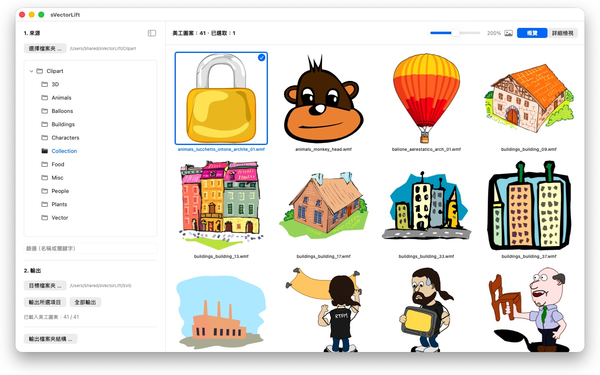
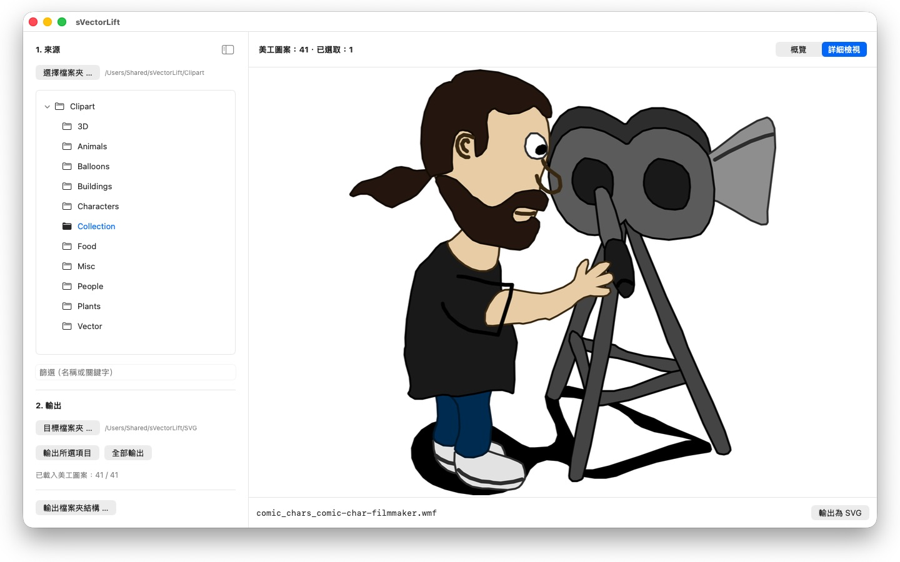

那些舊 CorelDRAW 光碟上的成千上萬張美工圖案，被鎖在再也沒人打得開的檔案格式裡。sVectorLift 把它們變成今天就能用的圖形。




書架上的某個角落，放著一張多年前買下的美工圖案光碟。檔案都還在，可是 Mac 上沒有一個程式打得開。
24 種語言：Deutsch · English · Español · Français · Italiano · Nederlands · Português · Svenska · Norsk · Suomi · Polski · Čeština · Hrvatski · Magyar · Română · Türkçe · Русский · Українська · فارسی · ไทย · 日本語 · 한국어 · 简体中文 · 繁體中文
sVectorLift 讓這些圖重新派上用場。它把每一幅圖重新建構為真正的 SVG：任何尺寸都清晰、可編輯，可以直接用在 Illustrator、Affinity、Inkscape、Sketch、Figma 裡，或者放到你的網站上。不只是又看得見，而是又用得上。這就是名字裡「lift」的意思：把舊的向量圖，提到你今天所用工具的水準上。
它能打開什麼
- CorelDRAW 文件（.cdr），第 6 版至第 9 版
- Corel Binary Meta File（.cmx）——包括其他工具拒絕讀取的舊式 CDRX
- Windows Metafile（.wmf）
- Computer Graphics Metafile（.cgm）
- QuickDraw 3D Metafile（.3dm、.3dmf），算圖為影像
- Scalable Vector Graphics（.svg），直接顯示
許多副檔名為 .cdr 的檔案其實並不是 CorelDRAW 文件，而是 CMX——常見的轉換器正是栽在這裡。sVectorLift 兩者都讀。
sVectorLift 是為美工圖案收藏而做的：圖樣、符號、插圖。它不是排版軟體，也無意重現多頁手冊或印刷稿。
真正的向量轉換
這裡不是把預覽縮覽圖翻拍一遍。sVectorLift 讀的是圖本身：路徑與貝茲曲線、填色、漸層、外框與虛線樣式、圖樣與紋理填充、內嵌照片以及文字物件。出來的是真正的向量資料，可以縮放、改色、編輯，而不是一張圖的照片。
純點陣圖則輸出為 PNG，這樣什麼都不會遺失。
需要的不是向量圖而是影像？「輸出為 PNG」和「輸出為 JPG」可將任何圖（包括 SVG 檔案）算圖為影像，尺寸就是你在「設定」中指定的大小。
瀏覽你的收藏
- 涵蓋整個收藏的檔案夾樹狀列表，含子檔案夾
- 清晰向量縮覽圖的格狀排列，大小可用滑桿無段調整
- 詳細檢視——用方向鍵在檔案夾裡翻看
- 依名稱或關鍵字篩選
- 與「照片」一樣的多重選取：點按、⌘-點按、⇧-點按、框選、⌘A
- 從 Finder 直接打開單一檔案（「打開檔案的應用程式」或按兩下）
- 最近使用的檔案夾會記住你停下的位置：子檔案夾和選取的檔案
- 一步輸出所選項目或整個檔案夾
- 一次轉換整個檔案夾結構（含子檔案夾）——目標檔案夾中保留原有結構
- 重新命名、在 Finder 中顯示、移到垃圾桶
對你的 Mac 又快又體貼
縮覽圖只為你正在看的內容計算，在背景進行並帶快取。大檔案夾立刻打開，而不是先卡上幾分鐘去處理成千上萬個檔案。
一切都留在你的 Mac 上。沒有網路連線，沒有帳號，不收集資料。
CorelDRAW 是 Corel Corporation 的商標。sVectorLift 是獨立 App，與 Corel 無從屬關係，也未獲其背書。
- 需要 macOS 14 或以上版本
- 支援 24 種語言
- 技術支援： SwiftAppsBavaria@gmx.net
更多 App
sCollectPlay Lite
sCollectPlay 的精簡版：直接開啟檔案夾、iTunes XML 或 sCollect 媒體庫，播放其中的音樂、影片、有聲書與 Podcast——支援播放列表、音軌與字幕軌、慢動作與逐格播放。一次只能開啟一個來源。分欄瀏覽器、自訂播放列表與最近使用的來源列表僅限完整版。
sName2Date Lite
每次處理一個檔案的版本：將檔案名稱中的日期作為拍攝日期寫入照片、影片或錄音，手動設定日期，將名稱改為 ISO 格式，並可用 ⌘Z 還原所有處理——功能與 sName2Date 相同，只是無法處理整個檔案夾。
sBikeBridge
分析自行車騎乘紀錄，無需上傳至任何平台：讀取任何以此格式記錄的碼錶所產生的 FIT 檔案，以及 GPX 與 TCX。騎乘紀錄儲存在 Mac 上的專屬資料庫——包含地圖、功率與心率、照片與備註；匯入時會辨識重複項目。依年或依月的統計數據，以及依距離、爬升高度與時長篩選，讓騎乘紀錄易於比較。地圖也可視需要離線使用。